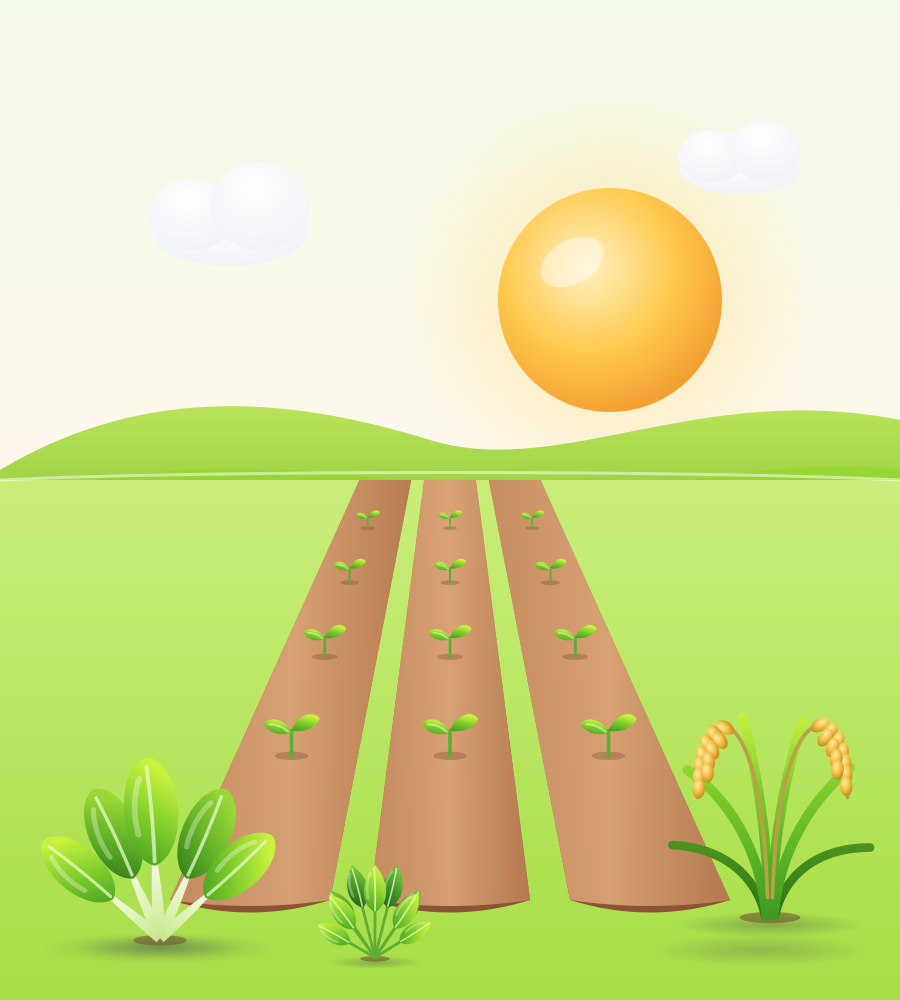

Pengganti kapsul
Pemilih siklus berupa kartu bergambar
Desktop: deretan kartu yang bisa digeser, dengan tombol panah bila lebih dari tiga.
- Gambar tanaman membuat siklus dikenali sekilas, tanpa membaca.
- Progres dan tanda "terlambat" langsung terlihat, jadi petani tahu siklus mana yang perlu diurus.
- Kelompok petak pesanan (D-40) tampil sebagai batang bersegmen, satu segmen per petak.
- Tetap satu pilihan:
role="radiogroup", panah kiri dan kanan untuk keyboard.
Di HP: geser ke samping


Kartu berikutnya terpotong di tepi layar sebagai tanda bisa digeser. Satu baris saja, tidak memakan tinggi layar.
Kenapa bukan menu tarik-turun
Menu tarik-turun menyembunyikan pilihan lain dan butuh dua ketukan. Petani dengan 2–4 siklus lebih cepat memilih bila semuanya terlihat. Menu tarik-turun baru masuk akal di atas 6 siklus; untuk itu sudah ada halaman Kebun.
Ilustrasi pengganti
